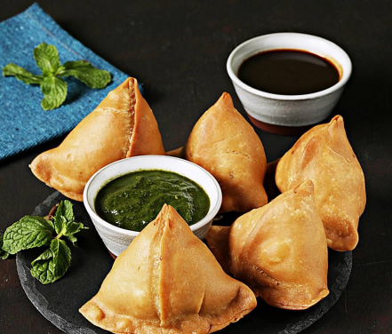
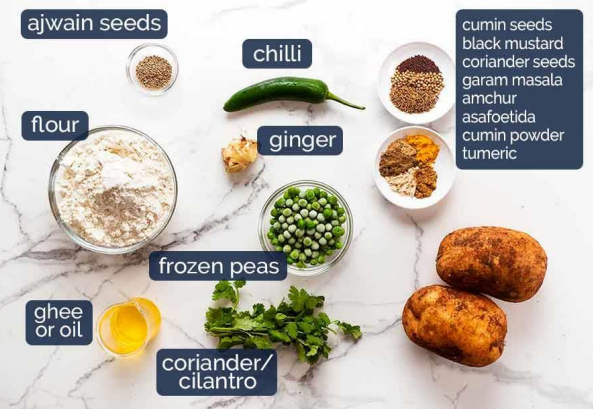

2 cups (250 grams) all-purpose flour (organic/ unbleached)
6 tablespoons (90 ml) water
½ teaspoon carom seeds (ajwain)
½ teaspoon salt.4 medium (500 grams) potatoes
½ cup green peas (boiled or frozen)
1 tablespoon oil or ghee
1 tablespoon ginger minced or paste
1 to 2 green chilies chopped (optional)
1 pinch hing (asafoetida) (optional)
4 tablespoons coriander leaves chopped finely
1 teaspoon lemon juice (or ½ tsp amchur or chaat masala)
½ teaspoon salt (adjust to taste)

1. Knead the dough gently to smoothen a bit. Divide it to 5 portions and roll to balls. Cover the dough
balls until the end, to prevent drying out.
2. Grease the rolling area and then flatten a ball Drizzle a few drops of oil
3. Begin to roll to a circle or oval shaped disc. (Around 8.5 inches long by 6.5 inches wide). It should
be neither too thick nor too thin.
4. Using a knife cut it to two semicircles. The 2 parts make 2 samosas. If the edges are too thick,
gently roll it to thin down.
5. Work on one part apply water over the straight edge (towards the cut side). Join the edges to make a
cone. Press down gently to seal the cone from inside as well (Check video or photos above) (If you
have trouble sticking them, make a paste of flour and water, smear that lightly & then stick)
5. Fill the cone with one portion of potato masala and press down with your finger to push it inside the
cone. Smear water generously on both the other edges
6. Bring the edges together and seal them by pinching off the edges together. If you prefer to make a
standing samosa, make a pleat on one side. Bring back the pleat and seal it by pinching off the
edges together. (Check video or photos above)
7. Make sure the samosa is sealed well. Cover them with a cloth to prevent drying.